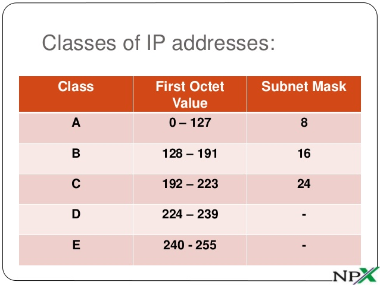

Note
This content is for educational purposes only and it is designed to help you understand IP Addresses and Subnets Masks more better.
Refer to this article when:
Depending on the size of the network, IP-based networks are divided into three classes :
In an IP network, every machine on the same physical network sees all the data packets sent out on the network. As the number of computers on a network grows, network traffic will grow many fold, bringing down performance drastically. In such a situation, you would divide your network into different subnetworks and minimize the traffic across the different subnetworks. Interconnectivity between the different subnets would be provided by routers, which will only transmit data meant for another subnet across itself. To divide a given network address into two or more subnets, you use subnet masks. The default subnet masks for class A networks is 255.0.0.0, for class B is 255.255.0.0, and for class C is 255.255.255.0, which signify a network without subnets.
The InterNIC has (RFC 1597 Address Allocation for Private Internets) allocated particular blocks of network addresses for use in intranets. These IP addresses don't conflict with those of existing Internet hosts and will not be handed out for use on the Internet.
The address blocks are:
Computers on networks using the above IP addresses will be treated as private ones and they can communicate only within the company intranet. However, they can still access the outside world using proxy servers. This adds to the security of your intranet. So, your intranet should always use addresses from these reserved groups only.
Now, which IP address class should you use for your intranet?The answer depends on the number of hosts that are going to be connected to the intranet. Any machine connected to the network, whether server or client, is called a host.
Without subneting, you can have the following configurations :
| No Of Machines To Be Connected | Class Of Network | Network Addresses |
|---|---|---|
| 65,535 to 16,777,214 | A | 10.0.0.0 |
| 255 to 65,534 | B | 172.16.0.0 to 172.31.0.0 |
| 254 or less | C | 10.0.0.0 |
Thus, if you are having a class C network that is not permanently connected to the Internet, your network address can be any one from 192.168.1.0 to 192.168.255.0, and without subneting, you can have 254 hosts having addresses 192.168.1.1 to 192.168.1.254, if you have selected 192.168.1.0 as your network address; 192.168.1.255 is the broadcast address and 192.168.1.0 is the network address for this network.
In assigning IP addresses to machines, you have two choices. You can either go around typing in the individual address on each machine or you can setup one machine to assign IP addresses to the others. The second one called dynamic addressing is preferred for three reasons. First, it makes the job of administering the network such as adding new clients, avoiding IP clashes, etc a lot easier. And second, since only those machines that are switched on will need an IP address, you could potentially have more machines on your network with dynamic addressing, than you could with static addressing. Finally, mobile computing has become an everyday reality, and notebook computers have a likelihood of moving from one network to another or from one subnet to another. In such a situation, if you have static IP addressing, you have to reconfigure the machine every time you move it something that is eminently avoidable. You do dynamic addressing with DHCP (Dynamic Host Configuration Protocol). To make DHCP work on your network you have to set up a DHCP server. Calculation of IP addresses and subnet masks is no job for the binary challenged. A handy tool which will do all this for you is the IP Subnet calculator, a freeware tool from the Net3 Group. It is available on the PCQ July 97 CD-ROM.
We will consider a class C network being subneted. First of all you have to decide how many subnets you want to have. This can be along functional lines like different subnets for accounts, sales, and marketing etc. You also need to know the number of hosts that the largest subnet is to support. And remember to keep future needs in mind.
Assume that the network address chosen for your intranet is 192.168.1.0, and that you want seven subnets, with the largest one having 20 hosts.Since you are dealing with binary numbers, subnets can be created only in blocks of powers of
two. That is you can have two subnets, four, eight, 16, and so on. In this case you choose eight subnets, which will also give you one free subnet for future use. Your IP address is a 32-bit binary number. Out of this the first 24 bits
(8 x 3) have already gone for the network address. Now you have to set aside the next three (8 = 23 ) for subneting. That leaves you with 32-24-3 = 5 bits for host addresses. With five bits you can have 25 = 32 individual IP addresses
for the hosts. Of these, two all 1s and all 0s cannot be assigned to hosts. The all 0s host number identifies the base network or the subnet while the all 1s host number identifies the broadcast address of the network or subnetwork. So,
you can have a maximum of 30 hosts on each subnet.
If you want more than 30 hosts on a subnet, what would you do? Reduce the number of subnets or go for a higher class of network. Remember that the maximum number of hosts on a class C network is 254 (after subtracting the broadcast address and the network address), and with every subnet, you are reducing that number by two. (8 x 30) + (7x2) = 240 + 14 = 254.
Now we come to the binary numbers :
Converting this to binary, the required subnet mask is 255.255.255.224 (11100000 in binary is 224 in decimal notation). The subnets are numbered 0 to 7. The subnet is defined by replacing the three most significant digits ( first three from left) of the last octet in the network address with the binary representation of the subnet number. Thus,
A quick check on your calculations is that the fourth octet (in decimal) of all subnets will be multiples of the fourth octet (in decimal) of subnet 1.As originally defined, subnets with all 0s and all 1s subnets 0 and 7 in this case were not to be used. But today's routers can overcome this limitation.
Now we come to the host address for each of the subnets. Hosts are numbered from 1 onwards as against subnets which as we saw are numbered from 0 onwards. In this case, we have 30 hosts in each subnet, and they will be numbered from 1 to 30. To arrive at the host IP address, replace the host portion of the relevant subnet address (the last five digits of the fourth octet in this case) with the binary equivalent of the host number.Thus, the IP address of host number 3 on subnet 1 will be 11000000.10101000.00000001.00000011 = 192.168.1.3 and that for host number 30 in subnet 6 will be 11000000.10101000.00000001.11011110 =192.168.1.222.The broadcast address for subnet 4 is 11000000.10101000.00000001.10011111 = 192.168.1.159, which is one less than the subnet address of subnet 5.
Tips
For much better user experience,you can use the links at the right section of the webpage to scroll back to the earlier contents.